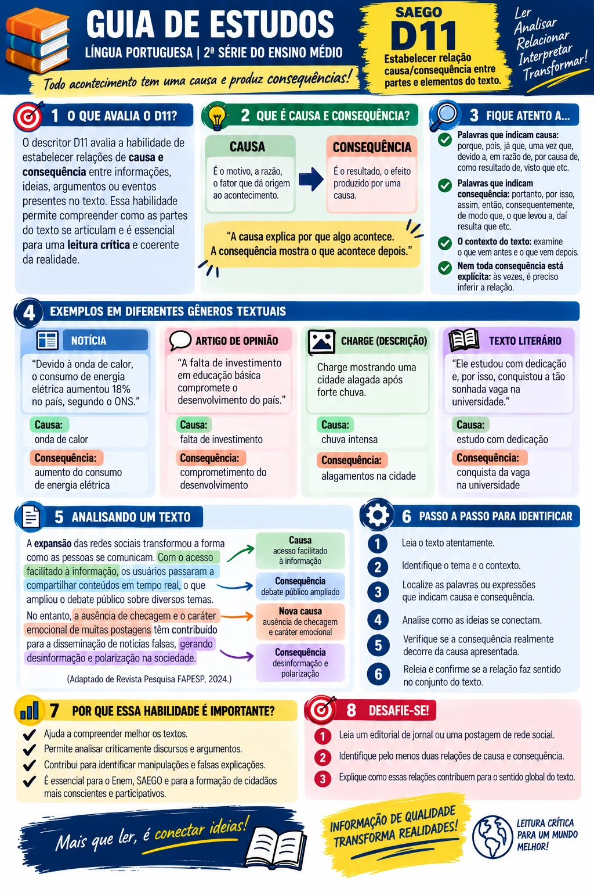
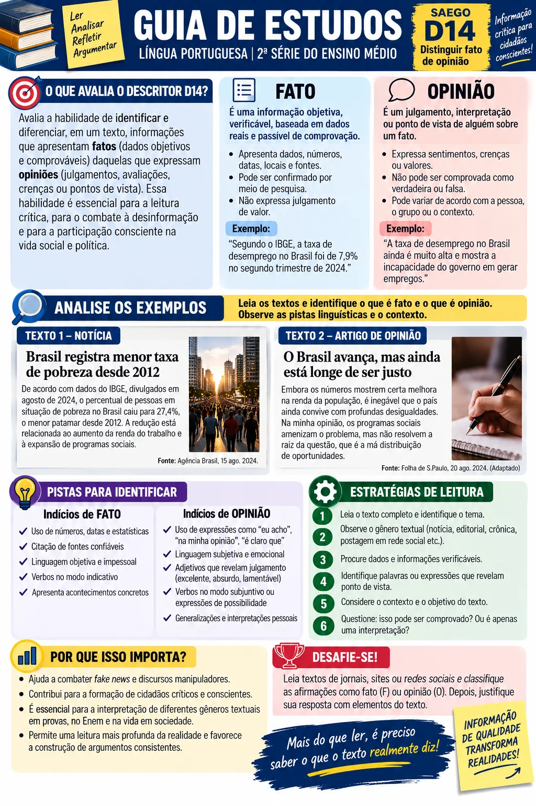

Leia a teoria
Conceitos curtos, quadros de apoio e dicas de prova.
Explore os exemplos
Clique em “Revelar” e veja causa, consequência, fato e opinião coloridos.
Treine
Marcadores de causa e consequência, relação entre as ideias (D11) e detector de fato ou opinião (D14).
Faça o quiz
Dez questões por descritor, no formato das provas do SAEGO (cinco alternativas, em ordem alfabética). Ao clicar, aparece um popup com certo ou errado e o porquê de cada alternativa.
1O que é causa e o que é consequência?
Causa
É o que provoca, origina ou explica um fato. Responde à pergunta: “Por quê?”
Consequência
É o que resulta da causa: o efeito, o desdobramento. Responde à pergunta: “E daí? O que aconteceu depois?”
No Ensino Médio, as questões raramente trazem uma relação simples. O texto costuma apresentar uma cadeia (A provoca B, que provoca C, que provoca D), várias causas para um mesmo fato ou uma consequência que ninguém previa. Por isso, a primeira coisa a fazer é descobrir em que ponto da cadeia a pergunta está.
Causa imediata (ou próxima)
É o elo que vem logo antes do efeito. Se a pergunta diz “diretamente” ou “imediatamente”, é ela que se procura.
Causa remota (ou inicial)
É o começo da cadeia, o que desencadeou tudo. Se a pergunta diz “origem” ou “ponto de partida”, é ela.
2Método em cinco passos
- Localize o fato sobre o qual a questão pergunta e marque a palavra ou expressão do enunciado que indica o tipo de relação (“decorre de”, “é consequência de”, “explica”, “leva a”).
- Pergunte ao texto “por quê?” A resposta antes do fato é a causa. Pergunte “e daí?” A resposta depois do fato é a consequência.
- Monte a cadeia com setas no rascunho: A → B → C. Assim você enxerga qual elo a alternativa está citando.
- Não confie na ordem do texto. Muitas vezes a consequência vem primeiro: “A colheita foi perdida, pois a geada chegou fora de época.”
- Confira na alternativa se a relação está mesmo no texto (ou é inferível a partir dele), e não apenas “parece razoável” no mundo real.
3Marcadores de causa e consequência
Clique em uma expressão e veja um exemplo com a causa e a consequência destacadas. Repare que os verbos também são marcadores, e podem inverter a ordem: em “A doença decorre da falta de saneamento”, a causa vem depois.
| Expressam CAUSA | Expressam CONSEQUÊNCIA |
|---|---|
| Conjunções: porque, pois, já que, visto que, uma vez que, como (início de frase) Locuções: devido a, em razão de, por causa de, graças a, em virtude de Verbos: decorrer de, resultar de, dever-se a, ser fruto de, originar-se de |
Conjunções: portanto, logo, por isso, assim, então, de modo que, tanto… que Locuções: como consequência, com isso, daí Verbos: provocar, causar, gerar, acarretar, levar a, resultar em, contribuir para, abrir caminho para |
Causa:
Consequência:
4Causa, consequência, finalidade, condição ou concessão?
O ENEM e o SAEGO gostam de perguntar qual é a relação estabelecida pelo conectivo. Cinco relações costumam ser confundidas:
| Relação | Pergunta que ela responde | Marcadores comuns | Exemplo |
|---|---|---|---|
| Causa | Por que aconteceu? | porque, pois, como, já que, visto que | Faltou luz porque o temporal derrubou a rede. |
| Consequência | O que resultou disso? | por isso, portanto, de modo que, tanto… que | Choveu tanto que as ruas alagaram. |
| Finalidade | Para que se fez? | para, a fim de, para que | Economizou para comprar a casa. |
| Condição | Em que circunstância? | se, caso, desde que, a menos que | Se chover, o jogo será adiado. |
| Concessão | Apesar de quê? | embora, ainda que, apesar de, mesmo que | Embora tivesse estudado, foi mal. |
Treino rápido: qual é a relação da parte destacada?
5Cadeias, várias causas e a armadilha da correlação
Várias causas
Um fato pode ter mais de uma causa. Alternativas com “somente”, “exclusivamente” ou “apenas” tendem a estar erradas quando o texto aponta um conjunto de fatores.
Efeitos não pretendidos
Uma medida pode gerar consequências contrárias ao objetivo. O texto costuma sinalizar com “porém”, “acabou por”, “justamente”.
6Exemplos comentados
Leia primeiro sem ajuda e tente localizar causa e consequência. Depois clique em Revelar.
A crise do Antigo Regime francês não se explica por um único fator. O endividamento do Estado, agravado pelos gastos com a guerra de independência dos Estados Unidos, levou a Coroa a tentar aumentar impostos. Como a nobreza e o clero resistiam a perder isenções, o rei convocou os Estados Gerais em 1789, reunião que abriu caminho para a Revolução.
Por ter nascido rico, Brás nunca precisou aprender a esperar; e, por nunca ter esperado, tomava a demora dos outros como ofensa pessoal.
O despejo de esgoto sem tratamento em lagos aumenta a quantidade de nutrientes na água. Com mais nutrientes, algas se multiplicam em excesso e cobrem a superfície, impedindo a entrada de luz. Sem luz, as plantas aquáticas morrem, e a decomposição delas consome o oxigênio de que os peixes dependem, daí as mortandades observadas.
Embora tivesse estudado durante a semana toda, o aluno foi mal na prova, pois o conteúdo cobrado não fora ensinado.
A queda no preço do petróleo derrubou a arrecadação dos estados exportadores e forçou cortes em áreas como saúde e educação.
Para atrair turistas, a cidade investiu em iluminação; como resultado, o comércio noturno cresceu.
7Como o ENEM/SAEGO cobra e onde estão as armadilhas
| Formas comuns de enunciado | O que fazer |
|---|---|
| “Segundo esse texto, … porque…” “Nessa notícia, … foi consequência…” (SAEGO) “X decorre de…” (ENEM) | Procure o elo imediatamente anterior a X na cadeia. |
| “A origem do problema descrito é…” | Procure o primeiro elo da cadeia. |
| “Nesse texto, no trecho “…”, a expressão destacada estabelece relação de…” (SAEGO) | Teste: dá para trocar por “porque”? (causa) Por “assim como”? (comparação) |
| “O que a medida provocou foi…” | Cuidado: pode ser um efeito contrário ao pretendido. |
Inverter causa e efeito
A alternativa troca as posições. Confira o sentido da seta.
Trocar o elo da cadeia
A informação até está no texto, mas é uma causa remota quando a pergunta pede a imediata (ou vice-versa).
Termos absolutos
“Apenas”, “somente”, “exclusivamente”, “sempre”, “nunca” raramente combinam com relações causais complexas.
Causa que não está no texto
Faz sentido no mundo real, mas o texto não diz. D11 é sobre o que o texto estabelece.
Confundir finalidade e resultado
O que alguém queria alcançar não é, necessariamente, o que ocorreu.
Confundir concessão e causa
“Embora”, “apesar de” e “mesmo que” introduzem um fato que não impediu o efeito. Não são causa.
8Quiz interativo · D11
Dez questões no formato das provas do SAEGO, com textos-base de gêneros variados (reportagem, crônica, tirinha, poema, texto de divulgação, notícia e outros). Clique na alternativa e veja o popup com o resultado e a explicação de cada opção.

1O que é fato e o que é opinião?
Fato
É algo que aconteceu, existe ou pode ser verificado: datas, números, acontecimentos, nomes, leis. Aceita a pergunta: “Dá para conferir?”
Opinião
É um julgamento, avaliação ou ponto de vista sobre o fato. Depende de quem fala e pode ser contestada. Responde a: “O que a pessoa pensa disso?”
Teste de bolso: se dá para procurar em documento, registro ou dado e dizer “confere” ou “não confere”, é fato. Se a resposta é “depende de quem avalia”, é opinião.
Fato não é sinônimo de verdade
“A Terra é plana” é uma afirmação sobre um fato (pode ser checada, e é falsa). “A Terra é bonita” é opinião: não há como “conferir”.
Relato de fala
“O ministro disse que a economia vai bem”: o fato é que ele disse; o conteúdo (“vai bem”) é avaliação dele.
Previsão e projeção
“O nível do mar deve subir até o fim do século” baseia-se em modelos, mas ainda não aconteceu. Não é fato comprovável hoje.
Dado + interpretação
“O desemprego caiu de 12% para 9%” é fato. “Prova definitiva de que a política está certa” é interpretação.
2Marcas de linguagem
| Costumam indicar FATO | Costumam indicar OPINIÃO |
|---|---|
| Datas e números (“em 1888”, “12 mil livros”) Nomes de pessoas, lugares e instituições Verbos de ação no indicativo (“aprovou”, “inaugurou”) Fontes citadas (“segundo o IBGE”, “de acordo com a lei”) Linguagem neutra, sem adjetivos de valor |
Adjetivos valorativos (“lindo”, “péssimo”, “absurdo”) Advérbios de avaliação (“infelizmente”, “felizmente”, “sem dúvida”) Verbos de opinião (“acho”, “considero”, “parece”) Modalizadores (“deveria”, “talvez”, “é preciso”) Superlativos e intensificadores (“o melhor”, “demais”) Generalizações (“todo mundo sabe”, “ninguém”) Ironia, aspas irônicas, exclamações |
Marcas mais sutis, muito usadas no ENEM e no SAEGO
Verbos de dizer carregados
“Reconheceu”, “admitiu”, “confessou” pressupõem que o que foi dito é verdadeiro ou negativo. “Alegou”, “insistiu”, “pretende” colocam dúvida. O verbo escolhido revela a posição de quem escreve.
Nominalizações valorativas
“A lamentável decisão”, “a bem-vinda reforma”: o fato (decisão, reforma) vem embrulhado numa avaliação (lamentável, bem-vinda).
Pressupostos
“Finalmente a obra terminou” informa o fato (terminou) e sugere que demorou demais. “Ainda”, “já”, “apenas” e “mesmo” também insinuam julgamentos.
Opinião “vestida” de fato
“É evidente que…”, “todo mundo sabe que…”, “é óbvio que…”: tentam dar ar de verdade a um ponto de vista.
3Como os textos misturam fato e opinião
- Fato + adjetivo na mesma frase: “A prefeitura entregou a vergonhosa obra em maio.” (fato: entregou em maio; opinião: vergonhosa).
- Fato e opinião em frases vizinhas: a primeira informa, a seguinte avalia.
- Duas opiniões opostas sobre o mesmo fato: o texto contrapõe pontos de vista (“para X…, já para Y…”).
- Dado citado e depois interpretado: o número é fato; a leitura dele (“assustador”, “prova de que…”) é opinião.
- Argumento de autoridade: “Segundo especialistas…” não transforma opinião em fato, mas pode indicar que há base científica. Avalie o conteúdo e a fonte.
4Detector: fato, opinião ou os dois?
Doze frases, e algumas trazem fato e opinião misturados. Escolha e veja na hora se acertou e por quê.
5Exemplos comentados
Tente separar fato e opinião antes de clicar em Revelar.
O time venceu o clássico por 2 a 1, com um gol nos acréscimos. Foi uma vitória suada e injusta, já que o adversário dominou o jogo.
O diretor reconheceu que houve falha na prova, enquanto a assessoria alegou que tudo ocorreu dentro do previsto.
A sala de espera do hospital tinha quarenta cadeiras e sessenta pacientes. Uma senhora, exausta, murmurou que “aquilo era um desrespeito com o povo”. Ninguém a contradisse.
A taxa de analfabetismo caiu de 8% para 6% em uma década. Um resultado espetacular, que dispensa novos investimentos.
Especialistas afirmam que o nível do mar deve subir até o fim do século. Por isso, alguns políticos defendem que as cidades litorâneas comecem já a se preparar.
Como todo mundo sabe, o brasileiro não tem o hábito de poupar. Uma pesquisa realizada com mil pessoas, porém, mostrou que 42% delas guardam parte da renda todo mês. (dados ilustrativos)
6Como o ENEM/SAEGO cobra e onde estão as armadilhas
| Formas comuns de enunciado | O que fazer |
|---|---|
| “Nesse texto, qual trecho apresenta uma marca de opinião?” (SAEGO) “O trecho que expressa uma opinião do autor é…” (ENEM) | Aplique o teste da subtração e procure o trecho que não se pode conferir. |
| “O fato e a opinião a ele relacionada estão em…” | Ache o acontecimento e, ao lado, a avaliação sobre ele. Cuidado com alternativas que invertem os papéis. |
| “Nesse texto, no trecho “…”, a palavra destacada revela…” (SAEGO) “A escolha do verbo/da expressão revela…” (ENEM) | Pense no efeito de sentido: neutralidade, dúvida, censura, elogio? |
| “O autor apresenta como fato algo que…” | Procure generalizações, “é evidente” e afirmações sem fonte. |
Trocar os papéis
A alternativa apresenta a opinião como fato e o fato como opinião. Confira cada trecho com o teste “dá para conferir?”.
Opinião atribuída a alguém
“Para o especialista…” continua sendo opinião. O que muda é quem opina.
Dado que parece neutro
Números são fatos; a interpretação deles (“um número assustador”) é opinião.
Frase mista
Uma mesma frase pode ter fato e opinião: “A obra, lamentavelmente, foi concluída em 2019.”
Verdade versus verificabilidade
Uma informação falsa ainda é uma afirmação factual (pode ser checada). Opinião não é “verdadeira” nem “falsa” do mesmo modo.
Ironia
A opinião pode vir por sentido oposto: “linda fachada para as fotografias” criticando algo vazio.
7Quiz interativo · D14
Dez questões no formato das provas do SAEGO, com textos-base de notícia, crônica, resenha, tirinha, artigo de opinião e outros. Clique na alternativa para ver o resultado.

Bibliografia e fontes para consulta
Documentos oficiais e provas
- BRASIL. Instituto Nacional de Estudos e Pesquisas Educacionais Anísio Teixeira (Inep). Provas e gabaritos do ENEM (edições anteriores). Disponível no portal do Inep: gov.br/inep.
- GOIÁS. SEDUC-GO. Caderno de prova do SAEGO, Língua Portuguesa (C1201). Usado como modelo de formato dos itens, dos enunciados e das alternativas desta revisão.
- BRASIL. Inep. Matrizes de Referência do Saeb — Língua Portuguesa (lista de descritores, incluindo D11 e D14).
- GOIÁS. Secretaria de Estado da Educação (SEDUC-GO). Sistema de Avaliação Educacional do Estado de Goiás (SAEGO): matrizes, itens liberados e revistas pedagógicas. Portal da SEDUC-GO.
- BRASIL. Ministério da Educação. Base Nacional Comum Curricular (BNCC). Brasília, 2018.
- GOIÁS. SEDUC-GO. Documento Curricular para Goiás (DC-GO).
Obras literárias que inspiraram os textos-base
- ASSIS, Machado de. Quincas Borba. (1891)
- BARRETO, Lima. Triste fim de Policarpo Quaresma. (1915)
- RAMOS, Graciliano. Vidas secas. Rio de Janeiro: Record. (1938)
- ASSIS, Machado de. Dom Casmurro e Memórias póstumas de Brás Cubas. (obras recomendadas para praticar D11 e D14 em textos literários)
Teoria sobre texto, coesão e argumentação
- KOCH, Ingedore Villaça. A coesão textual. São Paulo: Contexto.
- KOCH, Ingedore Villaça; ELIAS, Vanda Maria. Ler e compreender: os sentidos do texto. São Paulo: Contexto.
- PLATÃO, Francisco; FIORIN, José Luiz. Lições de texto: leitura e redação. São Paulo: Ática.
- BECHARA, Evanildo. Moderna gramática portuguesa. Rio de Janeiro: Nova Fronteira. (conectivos, orações causais e consecutivas)
- CEGALLA, Domingos Paschoal. Novíssima gramática da língua portuguesa. São Paulo: Companhia Editora Nacional.
Temas de reportagem (para buscar textos reais)
- Agência Brasil (agenciabrasil.ebc.com.br): meio ambiente, saúde, educação.
- Ministério da Saúde (gov.br/saude): cobertura vacinal e campanhas de imunização.
- Portais de jornalismo (Folha de S.Paulo, G1, Nexo Jornal, Agência Pública): reportagens sobre clima, mobilidade urbana e leitura.
- Retratos da Leitura no Brasil (Instituto Pró-Livro): pesquisa sobre hábitos de leitura.